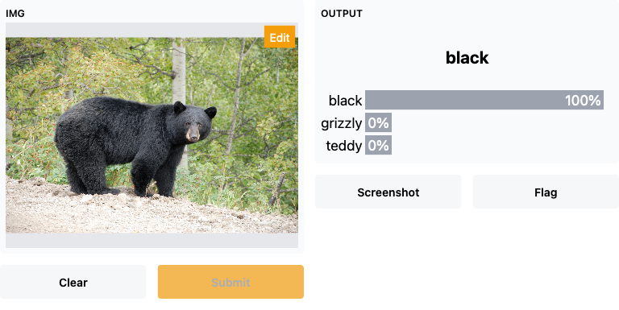

from jmd_imagescraper.core import *
from fastai.vision.all import *Introduction
I am following along with Chapter 2 of [1].
Preliminaries
Install the jmd_imagescraper library using
!pip3 install jmd_imagescraperI set FASTAI_HOME in my .bashrc so that datasets downloaded using Fastai are stored under a different location than the default. I do this because the default location, /home/kaushik/.fastai, is space constrained. Feel free to omit this step.
export FASTAI_HOME=/data/kaushik/.fastai
export PATH=$FASTAI_HOME:$PATHDownload and Clean Images
See utility function to download images, using the Duck Duck Go search engine, below (modified from here).
Code
def scrape_images(path, labels, search_suffix, erase_dir=True, max_images=20):
if erase_dir:
!rm -rf {path}
if not path.exists():
path.mkdir(parents=True)
for some_label in labels:
duckduckgo_search(path, some_label,\
f'{some_label} {search_suffix}', max_results=max_images)
filenames = get_image_files(path)
failed = verify_images(filenames)
failed.map(Path.unlink);
if failed != []:
_ = [filenames.remove(f) for f in failed]
# To avoid Transparency warnings, convert PNG images to RGBA
# https://forums.fast.ai/t/errors-when-training-the-bear-image-classification-model/83422/9
converted = L()
for image in filenames:
if '.png' in str(image):
im = Image.open(image)
converted.append(image) # old file name before resaving
im.convert("RGBA").save(f"{image}2.png")
converted.map(Path.unlink); # delete originals
total_images = len(get_image_files(path))
print(f"After checking for issues, {total_images} (total) images remain.")
return pathGet 100 images for each kind of bear.
labels = 'grizzly','black','teddy'
path = scrape_images(Path('/data/kaushik/bears'), labels, 'bear', max_images=100)Duckduckgo search: grizzly bear
Downloading results into /data/kaushik/bears/grizzly
100.00% [100/100 00:05<00:00 Images downloaded]
Duckduckgo search: black bear
Downloading results into /data/kaushik/bears/black
100.00% [100/100 00:05<00:00 Images downloaded]
Duckduckgo search: teddy bear
Downloading results into /data/kaushik/bears/teddy
100.00% [100/100 00:05<00:00 Images downloaded]
After checking for issues, 300 (total) images remain.Define the DataBlock
A DataBlock is a template for creating a DataLoader
bears = DataBlock(
blocks=(ImageBlock, CategoryBlock),
get_items=get_image_files,
splitter=RandomSplitter(valid_pct=0.2,seed=0),
get_y=parent_label,
item_tfms=Resize(128))Inspect a few items from the validation set
#collapse-output
dls = bears.dataloaders(path)
dls.valid.show_batch(max_n=4,nrows=1)
Inspect effect of Data Augmentations
#collapse-output
bears = bears.new(item_tfms=Resize(128), batch_tfms=aug_transforms(mult=2))
dls = bears.dataloaders(path)
dls.train.show_batch(max_n=9, nrows=3, unique=True)
Train Model
bears = bears.new(
item_tfms=RandomResizedCrop(228, min_scale=0.5),
batch_tfms=aug_transforms())
dls = bears.dataloaders(path)learn = cnn_learner(dls, resnet18, metrics=error_rate)
learn.fine_tune(4)| epoch | train_loss | valid_loss | error_rate | time |
|---|---|---|---|---|
| 0 | 1.668255 | 0.410353 | 0.150000 | 00:03 |
| epoch | train_loss | valid_loss | error_rate | time |
|---|---|---|---|---|
| 0 | 0.551829 | 0.221585 | 0.100000 | 00:02 |
| 1 | 0.401239 | 0.252073 | 0.083333 | 00:02 |
| 2 | 0.327227 | 0.271660 | 0.083333 | 00:02 |
| 3 | 0.274876 | 0.251819 | 0.083333 | 00:02 |
interp = ClassificationInterpretation.from_learner(learn)
interp.plot_confusion_matrix()
interp.plot_top_losses(5, nrows=1)
Clean the data
from fastai.vision.widgets import *The following will give us a UI that allows to mark images that are mislabeled (for relabeling) or completely wrong (for deletion).
cleaner = ImageClassifierCleaner(learn)
cleanerSo for each label we do the following:
First we choose the images to delete or relabel.
Second we run the following:
for idx in cleaner.delete() : cleaner.fns[idx].unlink()
for idx, cat in cleaner.change(): shutil.move(str(cleaner.fns[idx]), path/cat)Items that need to be deleted or whose label needs to be changed
cleaner.delete(), cleaner.change()((#4) [5,9,21,27],
(#11) [(0, 'black'),(1, 'black'),(2, 'black'),(3, 'black'),(11, 'black'),(14, 'black'),(15, 'black'),(16, 'black'),(17, 'black'),(19, 'black')...])for idx in cleaner.delete() : cleaner.fns[idx].unlink()
for idx, cat in cleaner.change(): shutil.move(str(cleaner.fns[idx]), path/cat)Retrain Model
bears = bears.new(
item_tfms=RandomResizedCrop(228, min_scale=0.5),
batch_tfms=aug_transforms())
dls = bears.dataloaders(path)learn = cnn_learner(dls, resnet18, metrics=error_rate)
learn.fine_tune(4)| epoch | train_loss | valid_loss | error_rate | time |
|---|---|---|---|---|
| 0 | 1.947632 | 0.435558 | 0.189655 | 00:02 |
| epoch | train_loss | valid_loss | error_rate | time |
|---|---|---|---|---|
| 0 | 0.471205 | 0.192515 | 0.103448 | 00:02 |
| 1 | 0.352979 | 0.143951 | 0.086207 | 00:02 |
| 2 | 0.290317 | 0.153008 | 0.068965 | 00:02 |
| 3 | 0.261623 | 0.159573 | 0.051724 | 00:02 |
interp = ClassificationInterpretation.from_learner(learn)
interp.plot_confusion_matrix()
Performance on Black bears has improved but we are now misclassifying some Grizzlies as Black bears.
interp.print_classification_report() precision recall f1-score support
black 0.86 1.00 0.92 18
grizzly 1.00 0.86 0.92 21
teddy 1.00 1.00 1.00 19
accuracy 0.95 58
macro avg 0.95 0.95 0.95 58
weighted avg 0.96 0.95 0.95 58
Save the model
learn.export('/data/kaushik/20210731/bear_v0/classifier.pkl')Load serialized model
learn_inf = load_learner('/data/kaushik/20210731/bear_v0/classifier.pkl')Inference
def get_prediction(model, image_location):
return model.predict(image_location)test_black_bear_image_location = '../test_images/black_bear.jpg'
im = Image.open(test_black_bear_image_location)
im.to_thumb(128,128)
pred, pred_idx, probs = get_prediction(learn_inf, test_black_bear_image_location)
f'Prediction: {pred}; Probability: {probs[pred_idx]:.04f}''Prediction: black; Probability: 1.0000'test_grizzly_image_location = '../test_images/grizzly.jpg'
im = Image.open(test_grizzly_image_location)
im.to_thumb(128,128)
pred, pred_idx, probs = get_prediction(learn_inf, test_grizzly_image_location)
f'Prediction: {pred}; Probability: {probs[pred_idx]:.04f}''Prediction: grizzly; Probability: 1.0000'Sadness
So far so good, test images of bears seem to be recognized perfectly. So now there is nowhere to go but downhill.
test_mainecoon_image_location = '../test_images/mc.jpg'
im = Image.open(test_mainecoon_image_location)
im.to_thumb(128,128)
pred, pred_idx, probs = get_prediction(learn_inf, test_mainecoon_image_location)
f'Prediction: {pred}; Probability: {probs[pred_idx]:.04f}''Prediction: teddy; Probability: 0.8470'So our classifier is very confident that the Maine Coon is a Teddy!
We work through how to tackle this issue by the use of multi-label classification in this post.
Model Demo
Chapter 2 of the book shows how to create a notebook app with Voila. However I recently ran into gradio which provides a neat way to quickly demo your model. The demo below will only run as long as my notebook is up.
Tip
Gradio has a paid hosted option which gives on the ability to have a permanent link.
import gradio as gr
def gradio_predict(img):
pred, pred_idx, probs = learn_inf.predict(img)
return {learn_inf.dls.vocab[i]: float(probs[i]) for i in range(len(probs))}
label = gr.outputs.Label(num_top_classes=3)iface = gr.Interface(fn=gradio_predict,
inputs=gr.inputs.Image(shape=(224,224)),
outputs=label)
iface.launch(share=True)The following screenshot shows the finished product. The UI allows one to upload an image, click submit and that’s it. Pretty neat!

References
[1]
J. Howard and S. Gugger, Deep learning for coders with fastai and PyTorch: AI applications without a PhD, 1st ed. O’Reilly, 2020.